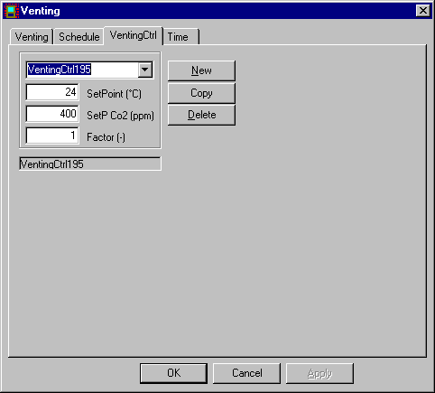

Systems, Naturlig ventilation
Modulet til simulering af naturlig ventilation med multi-zone modellen (mzm) er i øjeblikket udsendt i beta-test og resultater opnået med modulet skal, som altid, betragtes med sund skepsis.
Feedback til modulet på bsim-support@sbi.dk er meget velkommen!
Denne side er under ombygning
Simuleringen af naturlig ventilation (enkeltzone - EZM - eller multizone - MZM - simulering af naturlig ventilation) i BSim kræver inddata en række forskellige steder i modellen.
Site
Finish
Opening
Windoor
Venting
VentingCtrl
Nye parametre i resultatloggen
tsbi5 Options
Naturlig ventilation kan aktiveres på termisk zone niveau.
I simuleringerne med EZM tages kun hensyn til WinDoors/åbninger mod det fri. Den anvendte model kan findes automatisk af BSim.
I simuleringerne med MZM tages der tillige hensyn til luftstrømning gennem åbninger imellem termiske zoner. MZM kan dermed erstatte luftoverførsel mellem termiske zoner ved Mixing.
Naturlig ventilation ved EZM er implementeret som en speciel form for Venting (udluftning) i et udvidelsesmodul til BSim, og er baseret på By og Byg Anvisning 202, Naturlig ventilation i erhvervsbygninger, Beregning og dimensionering (2002).
MZM er ligeledes implementeret som en form for Venting og er baseret på Jensen R.L. Modellering af naturlig ventilation og natkøling - ved hjælp af ringmetoden.
Inddata for naturlig ventilation
Site

Weather File: Der skal vælges en klimadatafil som indeholder information om vindhastigheden for at der kan gennemføres en simulering af naturlig ventilation. Til højre for Browse-knappen vises information om indholdet af den valgte klimadatafil.
Co2: Koncentrationen af CO2 i udeluften (foreløbig konstant) opgives som en egenskab for bygningsmodellens lokalitet.
Terrain Type: Terræntypen vælges (se Anvisning 202, side 35) fra listen:
Open flat country: Åbent fladt land,
Country with scattered windbreaks: Landskab med spredt bevoksning,
Urban: Forstadsområder,
City: Bycentrum.
Finish

Wind Exposure Angiver de lokale vindforhold for en væg som vender mod det fri. Forholdene vælges fra listen:
Semi-exposed: Omkringliggende bygninger eller lignende er halvt så høje som væggen (standardværdi).
Exposed: Væggen er fritliggende.
Sheltered: Omkringliggende bygninger eller lignende er af samme højde som væggen.
Opening

Cd: Udstrømningskoefficienten Cd findes jvf. Anvisning 202, side 70-71.
Ka: Koefficienten bruges i forbindelse med bestemmelse af størrelsen af det areal hvor der er tvungen strømning og udetemperatur i modsætning til resten af loftet hvor der er fri strømning/konvektion og indetemperatur.
I simuleringerne benyttes det fulde (geometriske) areal af åbningen.
Windoor

Cd: Udstrømningskoefficienten Cd findes jvf. Anvisning 202, side 70-71.
Cnt: Åbningens center (0-1) er placeret i afstanden Cnt*H over vinduets underkant, hvor H er vinduets højde. Åbningens bredde antages at være bredden af vinduet.
Afrac: Andelen af det aktuelle vindues totale areal som kan åbnes. Hvis Afrac = 0 kan vinduet ikke åbnes, og kan således ikke bidrage til naturlig ventilation af den termiske zone.
Ka: Koefficienten bruges i forbindelse med bestemmelse af størrelsen af det areal hvor der er tvungen strømning og udetemperatur i modsætning til resten af loftet hvor der er fri strømning/konvektion og indetemperatur.
Som vindtrykkoefficienter - der afhænger af åbningernes orientering og vindens retning - anvendes værdierne angivet i Anvisning 202, Appendiks A, side 109-110.
Venting

Max AirChange: Maksimalt tilladeligt luftskifte (/h).
Max Wind: Ingen naturlig ventilation hvis vindhastigheden (m/s) er større end angivne grænse. Angives 0 m/s kan der forekomme naturlig ventilation uanset vindhastigheden.
Natural Ventilation: Den ønskede model vælges i listen under Natural Ventilation. Umiddelbart over listen vises hvilken model BSim selv foreslår. Der kan vælges mellem følgende muligheder:
(Disabled): Den oprindelige BSim model for venting.
(Automatic): BSim vælger den model som skal anvendes, bestemt af rummets geometri, se det matematiske grundlag for illustration af modelgeometrier svarende til nedenstende modeller for naturlig ventilation.
Single Sided: Ét sæt åbninger i én flade, i samme lodrette niveau.
Cross: Åbninger i to flader i samme højde (tværventilation).
Combined Two Levels: Åbninger i flere niveauer i to ikke parallelle flader.
Combined: Åbninger i flere niveauer i mere end to flader (kombineret opdrift- og tværventilation).
VentingCtrl

SetPoint: Temperatur setpunkt (°C). Hvis den operative temperatur i sensor zonen er over setpunktet udluftes der netop så meget, at setpunktet kan overholdes.
SetP CO2: Setpunkt for CO2 koncentration (ppm). Hvis der angives 0, styres der ikke efter CO2. Hvis CO2 koncentrationen i sensorzonen er over setpunktet, udluftes der netop så meget, at setpunktet kan overholdes. Hvis SetP CO2 er angivet (> 0), styres der først efter den ønskede CO2 koncentration og derefter efter setpunktet for temperaturen.
Factor: Andel af den maksimale luftmængde, som kan komme i brug.**
Nye parametre i resultatloggen
Under termisk zone/Air Balance:
VentFrac: Andel af de(t) totale åbningsareal der anvendes. Middelværdi over timen.
VentPi: Beregnet middeltryk i den termiske zonen, Pa.
Under Windoors
VentDPi: Trykforskel med fortegn, Pa.
VentSpeed: Lufthastighed, m/s.
VentCp: Vindtrykkoefficient (Anvisning 202, side 69).
Se alle parametre i resultatloggen her.
tsbi5 Options
Hvis modellen for simulering af naturlig ventilation ved multi-zone modellen ønskes benyttet ved simuleringen med tsbi5, skal der sættes et flag i Options dialogen under tsbi5.